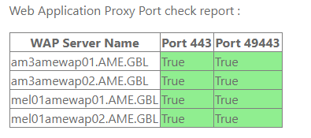

Configuration Page : The first step is to configure the farm name and optionally vips. This may be done by browsing to ‘/adfsdiag/configuration.aspx’. For example - https://adfsdiag-msazurecloud.msappproxy.net/adfsdiag/configuration.aspx
An unconfigured farm name would appear as follows –
To update farm name , put the FQDN of the farm name and click Update Farm Name button. Do not prepend with https:// or trailing /ADFS/LS/.
To clear a farm name , leave the text box empty and click update Or to direct update , supply the new name and click Update Farm Name.
Update the vips to be diagnosed in the following table.
The configuration is now complete.
This is a one-time configuration per farm.
VIP Health : The VIP Health tab may now be used to query the health of each vip. Navigate to . Select the vips to diagnose and click to get the health state of each vip. A healthy vip should appear in Green and with response ‘OK’.
Similarly , vips may be diagnosed for Token response as SYSTEM ( Web Server Account ) or as User by using the section below. Supply the name of an ADFS server , then click Select RP . The first RP is selected by default , continue with the default or choose another as desired. Then click VIP Token Check as System to perform token test against each VIP as SYSTEM account of Web Server Or Supply User Name and Password and use Get Token as User to test token against each selected vip as the supplied User. The password field is DPAPI protected and safe to use.
Web Application Proxy Health : Navigate to the tab. Provide the name of any WAP Server and click to get a list of all WAP servers in the farm.
3 Click to get the health of metadata endpoint of all selected WAPs. Healthy response will look like below
and unhealthy response will appear in red. Check the specific server indicated in Red for issues.
4 Use the button to get the health of each WAP server. This is equivalent to Get-WebApplicationProxyHealth
5 Simialrly use the button to check the connectivity of the selected WAP servers to the backend ADFS server database. This is equivalent to Get-WebApplicationProxyConfiguration.
6 The port check button will check the ports 443 and 49443 of the WAP servers.

7 The is used to check if there are any Non-Self Signed certificates in the Trusted Root store of the target machine.
If such a certificate Is found , it must be deleted from the Trusted Root store of the target machine.
If all servers are clean , the report will appear as follows
WAP token test performs a Token request and presents a report on success or failure on each server.
Supply the name of a WAP server in the 1st textbox and click button to get a list of all WAPs in farm.
In the 2nd textbox supply the name of an ADFS server and click button to get a list of all Relying Parties in the farm populated in dropdown list. The first Relying Party in the list is auto selected for you. Please select the desired Relying Party.
Now select all the desired WAPs from the list and click button to perform token test using computer account of the Web Server against the selected Relying Party. A successful response is shown above in Green.
If you get an “Access Denied” message as seen below, then select another Relying Party which does not have an MFA requirement. This is not an issue. This is because IssuanceAuthorizationRules on the selected Relying Party mandates 2FA or other rules which the web server machine account cannot perform.
Similarly, Token tests may be performed with UserName and Password and clicking Get Token as User button. The password is DPAPI protected.
ADFS Health Check : Similar to WAP Tests, ADFS servers can also be tested using the tool. The process and flows are same.
To get a list of all ADFS servers , supply the name of the Publisher which may be grabbed from the ‘SQL Replication Monitor’ tab. ( see later ).
Similar, token tests against ADFS servers using System account.
Or User account and password may also be used.
SQL Replication Health : Provide the name of any ADFS SQL Server in the farm and click Publications button. Followed by Subscription Watch List and Agents button to get a view of health of Publisher , Subscription health on Publisher ( Subscription Watch List ) and Agents ( Snapshot Agents).
To view the health or synchronization status of each Subscriber click Get Subscribers button , select the Subscribers to test and click View Synchronization Status.
A healthy state is reported in Green as Waiting 60 second(s) before polling for further changes. . Anything else is considered an error.
When an error is received , check the Synchronization status at least 3 time every 5 seconds. A non-blocking operation as seen in the example below ( in red ) where the Subscriber is uploading data to Publisher , should clear up. If the error does not clear up after 3 attempts , check the server.
Example of consistent error state where the server AM3AMEFED01 is unreachable –
Queries: The queries tab may be used to query Activity Ids when a user faces sign in issues. Request the user for the activity id.
On the queries Tab , provide the name of the ADFS Publisher and click Get ADFS , supply the activity id in the textbox and click Query.
Taparshi Pandit
Service Engineer II
ID Operations & Service Eng
+91-9874778677 | +91-9000959847
tapand@microsoft.com | CEDIS– ADFS Support CEDISADFSSUP@microsoft.com